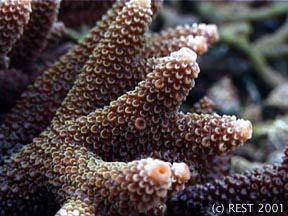
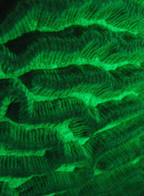
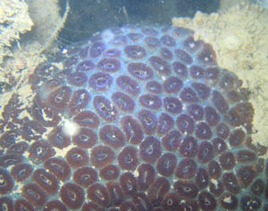

Hard Corals of Singapore
|
Maze coral, Merulinidae: Platygyra, Raffles Lighthouse, February 1992. Most merulinids (previously Faviidae) are typically found growing in a boulder shape. |
Bubble coral, Plesiastreidae: Physogyra lichtensteini, Pulau Hantu, June 1989. Bubble corals resemble soft corals but have a hard calcium carbonate skeleton under their fleshy polyps and vesicles. |
|
Bubble coral, Plesiastreidae: Physogyra lichtensteini, Pulau Hantu western patch reef, August 2003 |
Bubble coral, Euphylliidae: Euphyllia, Pulau Hantu western patch reef, August 2003 |
|
Anemone coral, Poritidae: Goniopora |
Anemone coral, Poritidae: Goniopora |
|
Bubble coral, Euphylliidae: Euphyllia ancora |
Merulinidae: Echinopora, Pulau Hantu western patch reef, August 2003 |
|
Lettuce coral, Merulinidae: Pectinia |
Leaf coral, Agariciidae: Pavona frondifera |
|
Coscinaraeidae: Coscinaraea columna, Pulau Sudong |
Cave coral, Dendrophylliidae: Tubastraea, The Sisters, September 1993. These brilliantly coloured cave corals do not possess symbiotic algae. As their name suggests, they flourish in deeper and darker areas of the reef. |
|
Mushroom coral, Fungiidae |
Mushroom coral, Fungiidae, Pulau Hantu western patch reef, August 2003 |
|
Mushroom coral, Fungiidae, Pulau Hantu west, 2 August 2003 |
Mushroom coral, Fungiidae: Heliofungia, Pulau Hantu west, 2 August 2003. Some mushroom corals have extra long tentacles and can be mistaken for anemones. However, they have a hard skeleton and are not attached to the reef. |
 Staghorn coral, Acroporidae: Acropora, Pulau Hantu west, 2 August 2003. On healthy reefs, staghorn corals can constitute up to 80% of the reef cover. However, they are rare in Singapore waters. |
Cauliflower coral, Pocilloporidae: Pocillopora, Pulau Hantu west, 12 July 2003. Pocillopora is a monthly brooder and one of the first genera to recruit on new surfaces. |
|
Disc coral, Dendrophylliidae: Turbinaria, Pulau Hantu west, 2 August 2003 |
Boulder coral, Merulinidae: Dipsastraea lizardensis, Raffles Lighthouse, 2003 |
|
Brain coral, Lobophylliidae: Symphyllia, Pulau Hantu, 2003 |
Boulder coral, Merulinidae: Favites abdita, Raffles Lighthouse, 2003. Boulder corals generally have an encrusting form as a young colony. |
|
Boulder corals, Merulinidae: Platygyra, Pulau Hantu, 2003. Space on a coral reef is extremely limited, so when two colonies grow closely together, competition occurs at the boundary where they meet. This is one way reef organisms are limited in their growth. |
Boulder corals, Symphyllia vs. Platygyra, Raffles Lighthouse, 2003. Another example of hard coral competition. |
|
Pore coral, Poritidae: Porites, Pulau Hantu East, 2002. Producing a mucus film is a way of removing excess sediment from the coral surface. However, this requires excess energy and is stressful to the coral colony. Porites can grow to extremely large sizes with diameters ranging 5m or more. These colonies are called 'bommies'. |
Bubble coral, Euphyllidae: Euphyllia, Pulau Hantu, 2003. A close-up of the polyp tentacles. |
|
Euphylliidae: Galaxea, Raffles Lighthouse, 2002. Galaxea polyps possess sweeper tentacles which reach out to sting any adjacent competitor hard coral or reef organism. |
Leaf coral, Agariciidae: Pavona, Pulau Semakau, 2002 |
|
Disc coral, Dendrophylliidae: Turbinaria, Pulau Hantu patch reef, 2003. A close-up of the polyps. |
Staghorn coral, Acroporidae: Acropora, NW Kusu Island, 2003 |
|
Cave coral, Dendrophylliidae: Tubastraea, Raffles Lighthouse, 2003. A close-up look at the polyps. |
 Staghorn coral, Acroporidae: Acropora, Raffles Lighthouse, 2001. Acropora is characterised by an enlarged terminal polyp at the tip of each branch. |
|
Table coral, Acroporidae: Acropora, Raffles Lighthouse, 2003 |
Mushroom coral, Fungiidae, North Sisters Island, 2003 |
|
Mushroom coral, Fungiidae: Heliofungia, Pulau Hantu, 2003 |
Mushroom corals, Fungiidae, Raffles Lighthhouse, 2002. Recruits of mushroom corals start out attached to the reef by a stalk, which breaks off as they grow older and bigger. |
 Mushroom coral, Fungiidae, Raffles Lighthouse, 2003. A closer look at the recruit and its attachment stalk. |
Euphylliidae: Pachyseris, Raffles Lighthouse, 1 September 2003. This genus of hard coral is typically characterised by parallel or concentric ridges on the colony's surface. |
|
Table coral, Acroporidae: Acropora, Raffles Lighthouse, 14 Nov 2003 |
Boulder coral, Merulinidae: Favites complanata, Raffles Lighthouse, 2 Jan 2004 |
|
Brain coral, Lobophylliidae: Symphyllia, Raffles Lighthouse, 2 Jan 2004 |
Bubble coral, Plesiastreidae: Plerogyra, Raffles Lighthouse, 2 Jan 2004 |
 Lettuce coral close-up, Merulinidae: Pectinia, Raffles Lighthouse, 2 Jan 2004 |
Mushroom coral, Fungiidae, Raffles Lighthouse, 2 Jan 2004 |
|
Sheet coral, Lobophylliidae: Echinophyllia, Raffles Lighthouse, 6 Feb 2004 |
Staghorn coral, Acroporidae: Acropora, Raffles Lighthouse, 6 Feb 2004. A young staghorn coral, commonly found in pristine reefs but rare in Singapore. The presence of young corals are encouraging as it shows that the corals here are reproducing. |
|
Mushroom coral, Fungiidae, Pulau Hantu, April 2005. New buds can sprout out of a dead individual. |
Boulder coral, Merulinidae, Labrador Beach, April 2005. Hard corals come out to feed at night! Their tentacles have stinging cells which immobilise small animals swimming in the water, which are then transported to the mouth and eaten! |
|
Frogspawn coral, Euphyllidae: Euphyllia divisa, Pulau Hantu, 27 April 2005 |
Young bubble coral, Plesiastreidae: Plerogyra, Pulau Hantu, 27 April 2005 |
|
Sheet coral, Merulinidae: Hydnopora, Pulau Hantu, 27 April 2005 |
|
Coral Competition Coral reefscapes appear pleasant, peaceful and placid to an unsuspecting visiting diver. In actual fact, there's an entire war zone out there. Coral reefs are crammed so full of marine life that the various inhabitants will do just about whatever it takes to claw an edge out over the rest. In scientific terms, we call these efforts 'competition'. Even though they do not move about and generally seem rather docile, hard corals compete with each other too. As each hard coral colony grows, it will inevitably contact and impinge on the the space of another colony. And especially since they are sessile animals, the tactics used can be pretty interesting. Consider the following interaction between a Pectinia and a Platygyra on a coral reef at St John's Island The Pectinia is obviously getting too close for the Platygyra's liking, which responds by sending out sweeper tentacles to sting its neighbour. Hard corals can either attack using stinging tentacles or evert their guts to digest their competitor where it stands! A closer look at the sweeper tentacles |
|
Coral Fluorescence Do you know that corals can glow in the dark? Certain wavelengths of light, particularly in the ultraviolet (UV) region can excite the photosynthetic centres of the coral zooxanthellae enough to emit fluorescence. With a yellow filter to remove the incident blue light, the effect looks much more pronounced, creating a psychedelic experience underwater. With UV light With a yellow filter  Close-up of a Platygyra coral fluorescing  Dipsastraea under white light Dipsastraea under UV light Merulinidae with yellow filter Fungiidae Turbinaria |